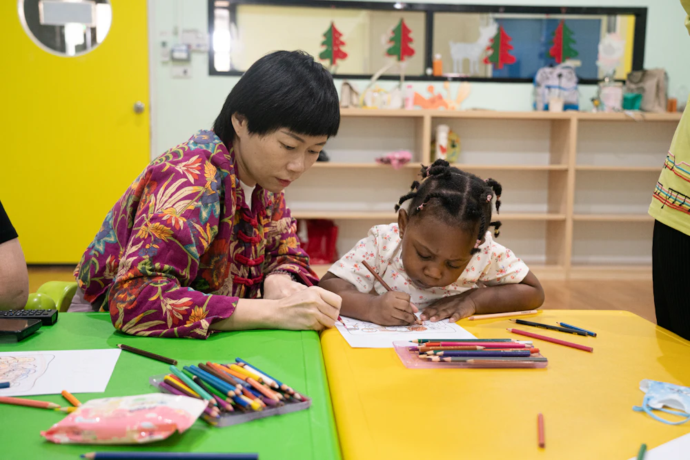
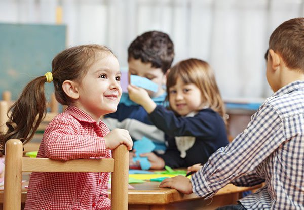

Stijlgids
Kinderopvang Pluk & Basisschool De Boomgaard: twee organisaties onder één dak. Hier staan alle bouwstenen van de landingspagina bij elkaar.
Kleuren
Basis: de samenwerking
Inkt (hoofd + tekst)
#2B2735
Neutraal licht
#EAE5DF
Achtergrond
#FFFFFF
Vlak
#F6F5F3
Tint roze (paneel)
#FFF3F6
Tint groen (paneel)
#F2FAF4
Kaart
#FFFFFF
Accenten: Pluk (roze) en De Boomgaard (groen)
Roze fel (decoratie)
#E8457C
Roze tekst
#B8285C
Roze licht
#FFE1EB
Groen fel (decoratie)
#3FAE5F
Groen tekst
#23793D
Groen licht
#DDF3E2
Twee huisstijlen, één pagina
De pagina heeft één gezamenlijke stijl in warme inktkleur, want het gaat over wat opvang en school samen doen. Roze en groen komen klein maar vaak terug: in het logo, de labels, de lijntjes, de kaarten, de tijdlijn en de vormen achter de foto's.
Typografie
Kop 1: Van opvang naar school
Kop 2: Wat merkt je kind ervan?
Kop 3: Bekende gezichten
Introtekst: Je kind kent het gebouw al. Ontdek wat de stap naar groep 1 betekent.
Lopende tekst: koppen in Nunito (afgerond en vriendelijk), lopende tekst in Nunito Sans (rustig en goed leesbaar). Teksten schrijven we op B1-niveau: korte zinnen en gewone woorden. Dit is een link.
Kleine tekst, bijvoorbeeld voor de privacytekst bij een formulier.
Knoppen
Probeer ook de Tab-toets: je ziet dan de focusrand voor toetsenbordgebruikers.
Foto's
Elke foto krijgt een afgerond vlak en een rondje erachter, in roze en groen.


Kaarten
De gekleurde rand wisselt tussen roze en groen.
-
Warme overdracht
Bekende gezichten
De pedagogisch medewerker en de juf van groep 1 kennen elkaar.
-
Kinderopvang Pluk
Na school naar de BSO
Een label in de accentkleur laat zien welke organisatie iets regelt.